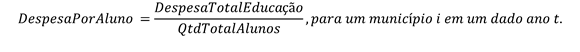
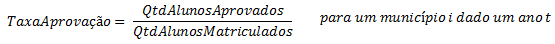
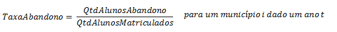
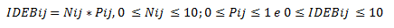
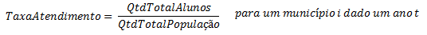
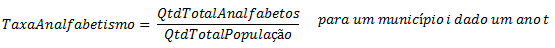
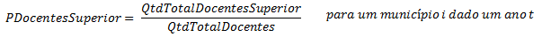
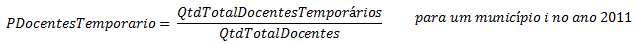

Mais.Edu
Entendendo sobre o dominio do problema...
Tópicos:
- Tipos de escola
- Fonte de recursos e despesas
- Descrição dos indicadores
- Indicadores do Tipo Financeiro
- Participação da despesa com pessoal e encargos sociais na função educação
- Despesa corrente por aluno
- Indicadores do Tipo Desempenho
- Taxa de aprovação (2 indicadores: Para o Ensino Médio e Fundamental)
- Taxa de abandono (2 indicadores: Para o Ensino Médio e Fundamental)
- Índice de Desenvolvimento da Educação Básica - IDEB (2 indicadores: 5º ano e 9º ano)
- Índice de eficiência da educação básica
- Indicadores do Tipo Infraestrutura
- Taxa de atendimento escolar
- Taxa de analfabetismo para pessoas com 18 anos de idade ou mais
- Índice de precariedade de infraestrutura escolar
- Razão aluno por docente
- Percentual de docentes com formação superior
- Percentual de docentes temporários e de contratos indefinidos
- Indicadores de Similaridade de Municípios
- Receita
- Total de Matrículas
- Índice FIRJAN de Desenvolvimento Municipal(IFDM)
Tipos de escola
Existem três tipos de escolas públicas: as municipais, as estaduais e as federais. A diferença entre elas é a unidade governamental que as regula, no município por meio do prefeito e da secretaria de educação, no estado por meio da secretaria de educação estadual e federal por meio do ministério da educação. Como estamos analisando os gastos e o desempenho da educação municipal, vamos nos ater às escolas públicas municipais.
Fonte de recursos e despesas
As escolas municipais recebem recursos das três esferas governamentais seja em investimento direto ou por meio de programas e planos do governo voltados para educação. Um exemplo de plano do governo voltado para educação é o Fundeb - Fundo de Manutenção e Desenvolvimento da Educação Básica e de Valorização dos Profissionais da Educação, que é um fundo especial de natureza contábil e de âmbito estadual, formado na quase totalidade por recursos provenientes dos impostos e transferências dos estados, Distrito Federal e municípios, vinculados à educação. Além desses recursos, ainda compõe o Fundeb, a título de complementação, uma parcela de recursos federais, todo o recurso gerado é redistribuído para aplicação exclusiva na educação básica. Outro exemplo é o PDE - Plano de Desenvolvimento da Educação que prevê várias ações que visam identificar e solucionar os problemas que afetam diretamente a Educação brasileira, mas vai além por incluir ações de combate a problemas sociais que inibem o ensino e o aprendizado com qualidade. As escolas e os municípios tem que cumprir certas exigências, como por exemplo notas mínimas em provas da escola e provas de aferição de qualidade do ensino, para que possam receber os recursos. A quantidade de recursos de todas as esferas governamentais que vai para cada município para ser aplicado em educação depende de vários fatores associados ao município, dentre eles, nota no IDEB, número de alunos e quantidade de profissionais. Cada município recebe o valor que deve ser empregado em educação proporcional, principalmente, a sua quantidade de alunos e de habitantes. Na maioria dos municípios a maior parte das despesas em educação é proveniente dos gastos com o pro-labore podemos perceber isso observando o indicador Particapação da despesa com pessoal e encargos sociais na função educação.
Descrição dos indicadores
A função principal do sistema “MAIS.edu” é auxiliar os auditores do TCE-PB na tarefa de saber se os recursos enviados para os municípios para financiar a educação estão gerando os resultados esperados. Segundo os auditores, não basta investir, é preciso saber se o investimento que está sendo realizado proporciona as melhorias esperadas na educação. Por meio do sistema, é possível perceber aspectos da qualidade da educação nas escolas públicas municipais, quanto tem sido investido nelas, e o sistema também alerta o auditor para comportamentos atípicos dos indicadores. Os indicadores usados foram selecionados pelo TCE. A lista destes indicadores é apresentada a seguir.
Indicadores do Tipo Financeiro
Esses indicadores são referentes aos gastos municipais na educação. Podem ajudar a identificar se uma prefeitura está gastando muito ou pouco com pro-labore e com alunos (merenda e material escolar, por exemplo) .Junto com os indicadores de desempenho podem mostrar se o dinheiro investido esta dando resultados positivos ou não.
Participação da despesa com pessoal e encargos sociais na função educação
Este indicador refere-se à taxa de participação da despesa de gastos com pro-labore e encargos sociais (natureza da função educação) dos recursos vindos para a educação do município.
 Os valores consideram apenas a rede municipal de ensino. Por exemplo:
Para o município Campina Grande essa taxa foi de 81,24% para o ano de 2011. Isso indica que do montante total gasto em educação por Campina Grande 81,24% foi gasto em pro labore e encargos sociais.
Fonte: Tribunal de Contas do Estado da Paraíba.
Os valores consideram apenas a rede municipal de ensino. Por exemplo:
Para o município Campina Grande essa taxa foi de 81,24% para o ano de 2011. Isso indica que do montante total gasto em educação por Campina Grande 81,24% foi gasto em pro labore e encargos sociais.
Fonte: Tribunal de Contas do Estado da Paraíba.
Despesa corrente por aluno
Trata-se da razão entre a despesa corrente na função educação pelo total de alunos matriculados na educação básica do município.  Esse indicador contempla apenas a rede municipal de ensino. Fonte: Censo Escolar – Instituto Nacional de Pesquisas Educacionais Anísio Teixeira (INEP) e Tribunal de Contas do Estado da Paraíba.
Indicadores do Tipo Desempenho
Taxas e outros índices que quantificam o desempenho da educação para os municípios da Paraíba. Esses indicadores aliado aos indicadores financeiros e de infraestrutura podem ajudar a identificar se um municipio está obtendo métricas de qualidade de ensino ruins por causa de falta de investimento, falta de infraestrutura ou por conta de recursos mal aplicados.
Taxa de aprovação (2 indicadores: Para o Ensino Médio e Fundamental) v
Refere-se à taxa de participação dos alunos aprovados em determinada fase de ensino do município.  Esses indicadores estão disponíveis para a rede municipal e estadual. Fonte: Censo Escolar – Instituto Nacional de Pesquisas Educacionais Anísio Teixeira (INEP).
Taxa de abandono (2 indicadores: Para o Ensino Médio e Fundamental)
Refere-se à taxa de registro de abandono dos estudos pelo total de alunos matriculados no município.  Esses indicadores estão disponíveis para a rede municipal e estadual. Fonte: Censo Escolar – Instituto Nacional de Pesquisas Educacionais Anísio Teixeira (INEP).
Índice de Desenvolvimento da Educação Básica - IDEB (2 indicadores: 5º ano e 9º ano)
Refere-se ao produto da média de proficiência em Língua Portuguesa e Matemática (padronizada entre zero e dez) para alunos concluintes das fases finais do ensino fundamental (5º ano e 9º ano) pelas as taxas de aprovações escolares em cada fase em um município. As notas de proficiência dos municípios consideram apenas as escolas que participaram da Prova Brasil. A forma geral do Ideb é dada por: 
Onde: i = ano do exame (Saeb e Prova Brasil) e do Censo Escolar; Nij = média da proficiência em Língua Portuguesa e Matemática, padronizada para um indicador entre 0 e 10, dos alunos da unidade j, obtida em determinada edição do exame realizado ao final da etapa de ensino; Pij = indicador de rendimento baseado na taxa de aprovação da etapa de ensino dos alunos da unidade j. Esses indicadores estão disponíveis para a rede municipal e estadual.
Fonte: Prova Brasil – Instituto Nacional de Pesquisas Educacionais Anísio Teixeira (INEP) e Censo Escolar – Instituto Nacional de Pesquisas Educacionais Anísio Teixeira (INEP).Índice de eficiência da educação básica
Trata-se de um índice de desempenho do gasto público em educação básica que varia de 0% a 100%. Esse indicador foi produzido a partir do método de programação matemática conhecido como Análise Envoltória de Dados Sequencial (DEA-S). Nessa análise foram consideradas como variáveis de resultado (outcomes) as notas médias de proficiência em Língua Portuguesa e em Matemática e o inverso da taxa de distorção idade-série de cada município paraibano que participou das Provas Brasil de 2009 e de 2011. A média de gasto corrente por aluno nos últimos três anos, a partir de cada data de referência já citada, foi usada como insumo (input). Logo, essa análise estimou um índice que mensura o quanto cada unidade monetária gasta em educação retorna à sociedade em termos de qualidade da educação. Quanto maior esse indicador, mais eficiente é o município no uso dos recursos destinados à educação básica. A metodologia DEA Sequencial (DEA-S) foi a abordagem empregada no cálculo do presente índice. A DEA-S é utilizada para calcular os escores de eficiência quando existem informações por município e por ano (dados em painel) e reflete, pois, a evolução da eficiência de um dado município ao longo do tempo. O município é avaliado em relação a todos os demais no ano corrente (eficiência contemporânea) e em todos os anos precedentes (eficiência histórica). Nessa abordagem, compara-se um dado município não somente com as demais unidades no período atual, mas também com ele mesmo nos anos precedentes. Essa dependência temporal dos escores de eficiência baseia-se na suposição de que os municípios podem sempre repetir desempenhos obtidos nos anos anteriores, excluindo, pois a possibilidade de “retrocesso técnico” na educação. Reduções de eficiência são, nessa metodologia, atribuídos ao gerenciamento da educação e/ou à fatores exógenos (não controláveis pela municipalidade), e não a pioras da tecnologia educacional. Uma vantagem adicional da metodologia DEA-S é o fato de que a incorporação de informações passadas torna os escores de eficiência menos sensíveis à presença de outliers do que os índices de eficiência contemporânea. Esse indicador está disponível apenas para a rede municipal. Fonte: Censo Escolar e Prova Brasil – Instituto Nacional de Pesquisas Educacionais Anísio Teixeira (INEP) e Tribunal de Contas do Estado da Paraíba.
Indicadores do Tipo Infraestrutura
Indicadores relacionados à infraestrutura educacional de um município. Podem mostrar se uma cidade está conseguindo fornecer ensino a toda a população ou mesmo se as escolas possuem condições e recursos necessários para seu funcionamento adequado.
Taxa de atendimento escolar
Trata-se do percentual da população em idade escolar que frequenta a escola, independente da série, da modalidade (regular ou especial) e da rede de ensino (privada ou pública). Este indicador foi calculado para anos de 2000 e 2010, considerando a seguinte faixa de idade: entre 4 e 17 anos.  Indicador disponível para todas as redes de ensino (inclusive federal e particular). Fonte: Censo Demográfico – Instituto Brasileiro de Geografia e Estatística (IBGE).
Taxa de analfabetismo para pessoas com 18 anos de idade ou mais
Refere-se ao percentual de pessoas analfabetas com 18 anos de idade ou mais em relação ao total da população residente no município. Essa faixa etária considerou, portanto, os indivíduos fora da faixa de idade escolar obrigatória (entre 4 e 17 anos de idade).  Indicador disponível para todas as redes de ensino (inclusive federal e particular). Fonte: Censo Demográfico – Instituto Brasileiro de Geografia e Estatística (IBGE).
Índice de precariedade de infraestrutura escolar
Refere-se à taxa média das variáveis que sinalizam a existência de problemas de infraestrutura das escolas no município. As variáveis consideradas foram: se a escola funciona em prédio compartilhado, se tem localização precária (galpão etc), se não tem água filtrada, se não tem abastecimento de água, se não possui esgoto, se não tem energia, se não tem coleta de lixo, se não existe sala para diretor, se não existe sala para professores, se não existe laboratório de informática, se não existe laboratório de ciências, se não existe biblioteca, se não existe cozinha, se não possui internet, se não oferece merenda e se não existe sanitário dentro das instalações. Caso o indicador seja igual a 100% no município, então todas as escolas da rede correspondente têm todos os problemas de infraestrutura acima listados. Caso o indicador seja igual a 0%, então todas as escolas não sofrem dos problemas de infraestrutura considerados. Portanto, quanto mais próximo de 100%, pior é a situação da infraestrutura das escolas no município. Esse indicador está disponível para a rede municipal e estadual. Fonte: Censo Escolar – Instituto Nacional de Pesquisas Educacionais Anísio Teixeira (INEP).
Razão aluno por docente
Refere-se ao total de alunos do município dividido pelo total de docentes. Destaca-se que neste indicador não se considerou matrículas repetidas para um mesmo aluno, nem a repetição de um mesmo docente em diferentes turmas e escolas da mesma rede. Esse indicador está disponível para a rede municipal e estadual. Fonte: Censo Escolar – Instituto Nacional de Pesquisas Educacionais Anísio Teixeira (INEP).
Percentual de docentes com formação superior
Refere-se ao total de docentes que possuem formação de nível superior pelo total de docentes do município na rede correspondente.  Esse indicador está disponível para a rede municipal e estadual. Fonte: Censo Escolar – Instituto Nacional de Pesquisas Educacionais Anísio Teixeira (INEP).
Percentual de docentes temporários e de contratos indefinidos
Refere-se ao total de docentes em regime de contratação por contrato temporário/terceirizado ou que não informou o tipo de vínculo de trabalho em relação ao total de docentes na repectiva rede de ensino em um município (somente ano 2011).  PDocentesTemporario= QtdTotalDocentesTemporariosQtdTotalDocentes, para um município i no ano 2011. Esse indicador está disponível para a rede municipal e estadual. Fonte: Censo Escolar – Instituto Nacional de Pesquisas Educacionais Anísio Teixeira (INEP).
Indicadores usados para identificar Similaridade entre Municípios
Indicadores que são usados com o intuito de comparar quão similar um município é em relação a outro município. São indicadores relacionados a aspectos sociais e financeiros dos municípios. O objetivo do método de similaridade é exibir municípios que tiveram as mesmas condições de desenvolvimento e facilitar a comparação entre eles. Essa comparação pode mostrar municípios com oportunidades fincanceiras e sociais similares mas com valores diferentes para indicadores educacionais de qualidade, demonstrando a possibilidade de alguns municípios não estarem conseguindo investir bem seus recursos destinados à educação.
Receita
Refere-se a ao total de dinheiro recebido por um município em um dado ano. Fonte: Tribunal de Contas do Estado da Paraíba.
Total de Matrículas
Refere-se ao total de matrículas realizados em um município na rede correspondente em um dado ano. Esse indicador está disponível para a rede municipal, estadual, federal e também em todas as redes juntas (incluindo particular). Fonte: Censo Escolar – Instituto Nacional de Pesquisas Educacionais Anísio Teixeira (INEP).
Índice FIRJAN de Desenvolvimento Municipal (IFDM)
É um estudo anual do Sistema FIRJAN que acompanha o desenvolvimento de todos os mais de 5 mil municípios brasileiros em três áreas: Emprego & Renda, Educação e Saúde. Ele é feito, exclusivamente, com base em estatísticas públicas oficiais, disponibilizadas pelos ministérios do Trabalho, Educação e Saúde. O índice varia de 0 a 1. Quanto mais próximo de 1, maior o desenvolvimento da localidade. Além disso, sua metodologia possibilita determinar, com precisão, se a melhora relativa ocorrida em determinado município decorre da adoção de políticas específicas ou se o resultado obtido é apenas reflexo da queda dos demais municípios. Fonte: Federação das Indústrias do Estado do Rio de Janeiro(FIRJAM)